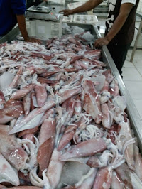

About Abdi jaya seafood
since 2018
Abdi jaya seafood adalah :suplayer segala jenis seafood untuk memenuhi kebutuhan pasar lokal jawa-bali,restoran,ritel,suplay pabrik pengolah ikan.dan juga kami melayani buyers internasional.kami menyediakan hasil laut di jamin kesegaranya,karna kepuasan pelanggan adalah motto kami.bila anda membutuhkan seafood fress maupun frozen hubugi kami.seasonal hasil laut.
macam macam jenis seafod yg kita sediakan

Cumi Cumi
segala macam jenis cumi, cumi loligo, cumi manis, cumi cantik,cumi pen ,balakutak,beby cumi,beby gurita.gurita karang gurita pasir.
Kepiting
Jenis Kepiting dan rajungan
Udang
segala jenis udang..udang tiger,banana ,dogol, peci,krosok,rongeng, vanami

Ikan
Kakap merah krapu,dorang ,tengiri ,tuna ,krese,lencam,kaci kaci,padi padi,jaket ayam ayam.
Kerang
segala jenis kerang. ijo, bambu,dara,batek,srumping,kerang kupas
Contact
Kita full servis selalu memenui permintaan pelanggan, semua jenis hasil laut dari yang kecil sampai yang besar. Kita mengerti apa yang Buyers inginkan ,jenis ikan yang segar dan fresh. Do not hesitate to contact us.
jln:Trunojoyo,Jompong rt 05 rw 05 Brondong, Lamongan Jawa timur Indonesia
You can also contact us by phone +6285604289558 or email uutabdijaya@gmail.com, or you can send us a message here: